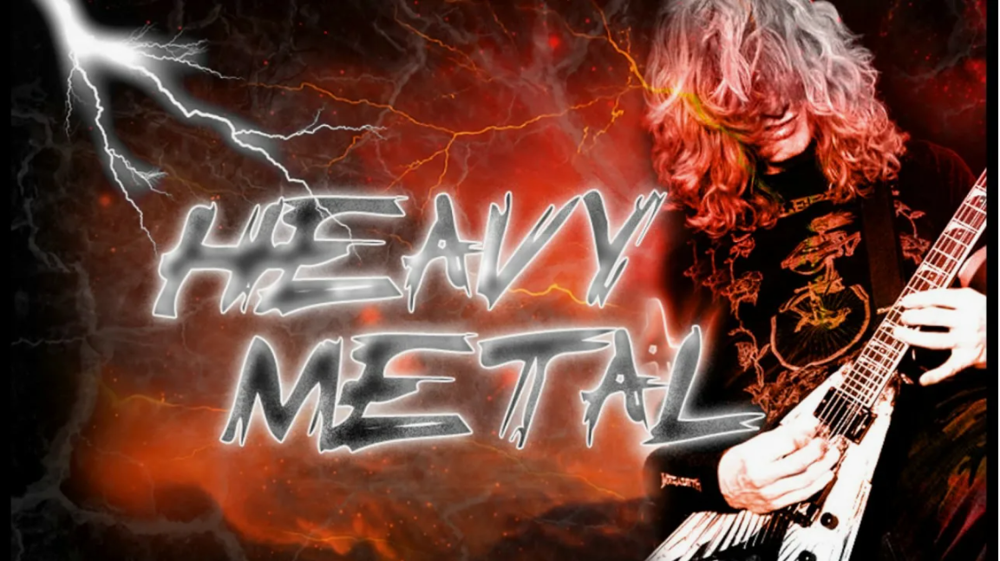
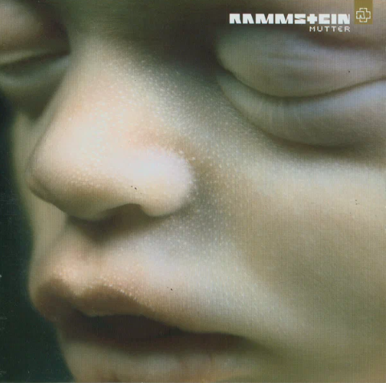

Метал
Метал (или хэви-метал) — жанр рок-музыки, характеризующийся агрессивным звучанием, искажёнными гитарами, мощными ударными и акцентированным вокалом. Возник в конце 1960-х — начале 1970-х годов в Великобритании и США. Метал развился в огромное количество поджанров, каждый со своим уникальным звучанием и эстетикой.
История метала
Пионерами метала считаются такие группы, как Black Sabbath, Deep Purple и Led Zeppelin. В 1970-х годах метал стал набирать популярность, появлялись новые группы и поджанры. 1980-е годы стали золотым веком метала, с появлением таких поджанров, как трэш-метал, дэт-метал и блэк-метал. Метал продолжает развиваться и по сей день, оставаясь одним из самых популярных и влиятельных жанров рок-музыки.
Поджанры метала
- Хэви-метал
- Трэш-метал
- Дэт-метал
- Блэк-метал
- Пауэр-метал
- Фолк-метал
- Прогрессив-метал
- Doom Metal
- Gothic Metal
Известные метал-исполнители
- Rammstein
- Cектор газа
- Limp Bizkit
- Linkin park
Рекомендуемые альбомы

Ядрена вошь
Сектрор газа

Matter
Rammstein